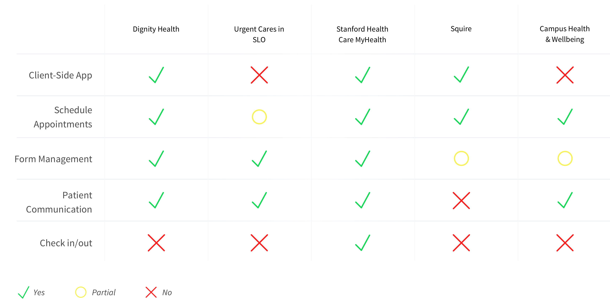

Cal Poly students need an easy way to schedule appointments, check in for appointments, and communicate with Campus Health & Wellbeing. Campus Health & Wellbeing is shifting towards scheduled appointments rather than walk-ins and the current system of scheduling is difficult to use. Along with scheduling appointments, students need to be able to check in and fill out forms at any location, not just in the Health & Wellbeing building. Students and healthcare providers also need an easy and quick way to communicate with each other to share important information in real time whether through text or video.
We believe that by designing a new app for Campus Health & Wellbeing that allows Cal Poly students to easily schedule and manage appointments, seamlessly check in, complete forms, and quickly communicate with the healthcare providers, we can create a smooth user experience for students who visit the health center. We will know this to be true when we see the student feedback to be rated above average. The main goal of the app is to reduce time spent using the system and ease of use.
Based on the competitive analysis, the direct competition to Campus Health & Wellbeing would be French Hospital owned by Dignity Health. They have a variety of apps that have a majority of the features we're looking to implement but all features are spread around multiple apps that can make it confusing to users. Stanford Health Care MyHealth is considered indirect competition but it is a great model to look at considering it's for university health centers and it has all of the features we're looking to actualize.
